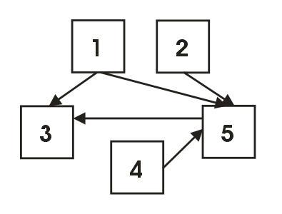
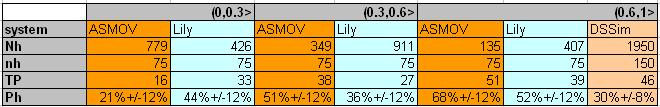
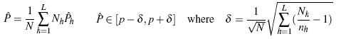
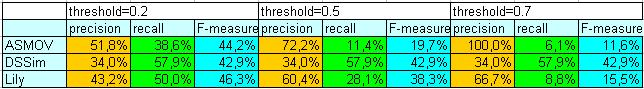

This year we plan to evaluate results of participants with following evaluation methods:
You can download all alignments delivered by participants. Also partial reference alignment is available, see the section Evaluation based on reference mappings. Please let us know what kind of an experiment you do with those data and the reference alignment (ondrej.zamazal at vse dot cz).
Evaluation methods are strongly intertwined. Mutual interdependencies are schematically depicted in Figure 1.
All but one methods are a posteriori evalution methods. The number of all distinct correspondences is quite high number, therefore we decided to take advantage of sampling. For this kind of evaluation we followed the method of "Stratified Random Sampling" described in [4]. We divided correspondeces of each participant to three subpopulations (strata) according to confidence measures (DSSim provided merely "certain" results, therefore there is one stratum for this system). For each stratum we randomly chose 50 correspondences in order to have 150 correspondences for each system for manual labelling.
Each individual correspondence was assigned a label (correct, incorrect, unclear, interesting incorrect, interesting correct).
As a result, this method provides an approximation of precision for each stratum (precision as proportion of correct correspondences given Bernoulli distribution). Moreover we computed approximated precision in the entire population from the approximated precisions of the strata. Additionally, based on the assumption that this adheres to binomial distribution we computed margin of errors (confidence of 95%) for the approximated precision for each system. These computations are based on equations from [4], section "Stratified Random Sampling".
In the table below, there are data for each stratum and system where Nh is the size of stratum, nh is the number of sample correspondences from stratum, TP is the number of correct correspondences from sample from stratum, and Ph is an approximation of precision for the correspondences in stratum, additionally there is a margin of error computed as 1/sqrt(nh).
We can see that it holds that the higher stratum (interval), the higher precision. The highest precision achieves ASMOV system in interval (0.6,1>. On the other hand, margins of error overlap, therefore we cannot say that ASMOV outperform Lily in this stratum. In the table above, there are the approximations of precision for each strata. Finally, we can compute the approximated precision in the entire population (P*). Using the following equations (where h depicts stratum, and sigma is a margin of error with a confidence of 95%) from [4]:
As we can see from the table above their margins of error overlap. therefore we cannot say which system performs better in this setting. In order to get more precise approximations, we should take larger samples or decrease of confidence (to 50%). However, better way is to take larger sample.
In the above table, there is also computed so-called 'relative' recall (rrecall) that is computed as ratio of the number of all correct correspondences (sum of all correct correspondences per one system) to the number of all correct correspondences found by any of systems (per all systems). Note that this year we computed rrecall over stratified random samples, so it is rather sample relative recall.
Besides, organisers will choose a list of 'interesting' (unclear, weird, surprising etc.) correspondences. These interesting cases (together with unclear cases emerged during work on new reference alignment, see section below) will be material for open discussion during so-called 'Consensus Building Workshop'.
This year, for the first time we have prepared reference alignments of classes for certain part of the whole collection. This reference set has been based on reference mappings done by people from Computer Science Institure at University Manheim, Germany (therefore we will call it "Mannheim reference alignment"). As a result, we provide participants with with traditional evaluation measures such as precision and recall. It is evaluation based on subset reference mapping of the whole collection with regard to generic task.
In the table below, there are results of all three participants with regard to Mannheim reference alignment. There are traditional measures - precision and recall and their harmonic mean (F-measure) computed for three thresholds 0.2, 0.5, and 0.7.

ASMOV team delivered not only equivalent relations but also subsumption relations. In this kind of evaluation we consider merely equivalent relations. ASMOV system has two lines. First one considers subsumptions as equivalences (an increase of recall), while the second one excludes all subsumption relations (an increase of precision).
These results are bias because Mannheim reference alignment contains just subset (8 ontologies) of all 15 ontologies from collection and because there are merely concept-to-concept correspondences.
17-10-08, we have finished new reference alignment with all possible pairs of five ontologies. Now, there are concept-to-concept and property-to-property correspondences with equivalent relation. Results of participants have been compared against this new reference alignment and the results are in the table below.
As we have said, merely correspondences with equivalent relation have been evaluated.
New reference alignment have been made over five ontologies (cmt, confOf, ekaw, iasted, sigkdd) and this is based on majority vote of three evaluators. In the case of disagreement or quite problematic situation, that correspondence will be the subject of broader public discussion during 'Consensus building workshop'. Material for this discussion is now published in the blog. You can download the new reference alignment in the official OAEI format.
Data Mining technique enables us to discover non-trivial findings about systems of participants. These findings will be answers to so-called analytic questions, such as:
We will try to answer abovementioned and similar analytic question. Those analytic questions will also be dealing with so-called mapping patterns [2] and newly also with correspondence patterns [1].
For the purpose of this kind of evaluation, we will use the LISp-Miner tool. Particularly, we will use the 4ft-Miner procedure that mines association rules. This kind of evaluation was first tried two years ago [2].
Evaluation will be ready in November, 2008.
This method will be done by Christian Meilicke and Heiner Stuckenschmidt from Computer Science Institure at University Manheim, Germany. In this kind of evaluation, ontologies will be merged on the base of correspondences submitted by participants. Subsequently, the incoherence of the mappings will be measured based on the incoherence of the merged ontology. This method is related to [3].
This method is quite different from abovementioned ones. The idea is to discuss interesting (unclear, weird, surprising etc.) correspondences collaboratively in the group of experts (everybody is expert in this domain). Similarly to previous year, we will organise (during the Ontology Matching workshop) so-called Consensus building workshop during which people will discuss about correctness of given correspondences either from general point of view or from application-specific perspective. As a result, we will analyze the process of argumentation that will ideally provide important insights regarding correspondences.
Evaluation will be ready in November, 2008.
Contact addresses are Ondøej Šváb-Zamazal (ondrej.zamazal at vse dot cz) and Vojtìch Svátek (svatek at vse dot cz).
[1] Scharffe F., Euzenat J., Ding Y., Fensel,D. Correspondence patterns for ontology mediation. OM-2007 at ISWC-2007.
[2] Šváb O., Svátek V., Stuckenschmidt H.: A Study in Empirical and ‘Casuistic’ Analysis of Ontology Mapping Results. ESWC-2007. Abstract Draft paper (final version available via SpringerLink)
[3] Meilicke C., Stuckenschmidt H. Incoherence as a basis for measuring the quality of ontology mappings. OM-2008 at ISWC 2008.
[4] van Hage W.R., Isaac A., Aleksovski Z. Sample evaluation of ontology matching systems. EON-2007, Busan, Korea, 2007.
Contact addresses are Ondøej Šváb-Zamazal (ondrej.zamazal at vse dot cz) and Vojtìch Svátek (svatek at vse dot cz).
Initial location of this page: http://nb.vse.cz/~svabo/oaei2008/eval1.html.